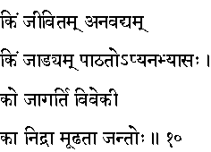
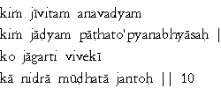

|

|
Verse 10 - Meaning:
Q: What can be deemed as an ideal life ? (kim jivitam)
A: A life that stands above all criticism is such one. (anavadyam)
Q: What is inertness ? (kim jadyam)
A: The act of not practising what one has learnt.
Q: Who is the vigilant (the one who is ever-awake)? (ko jagarti)
A: That one who has the power of discrimination (and who puts it to use) (viveki)
Q: What is sleep ? (ka nidra)
A: The complete ignorance of one's own predicament in this Samsara Sagara.
|